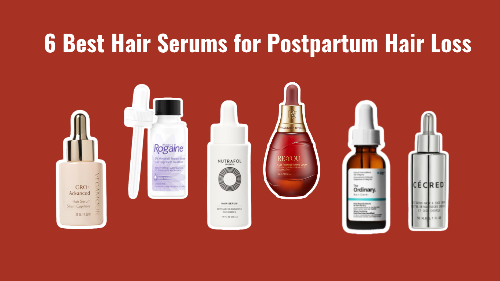
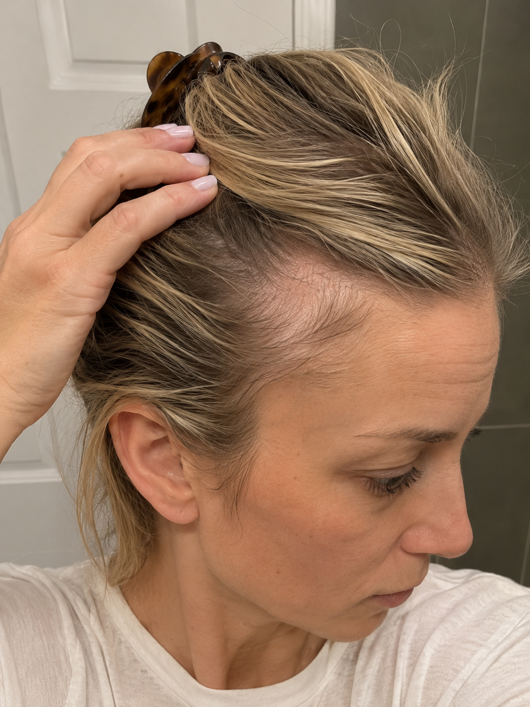
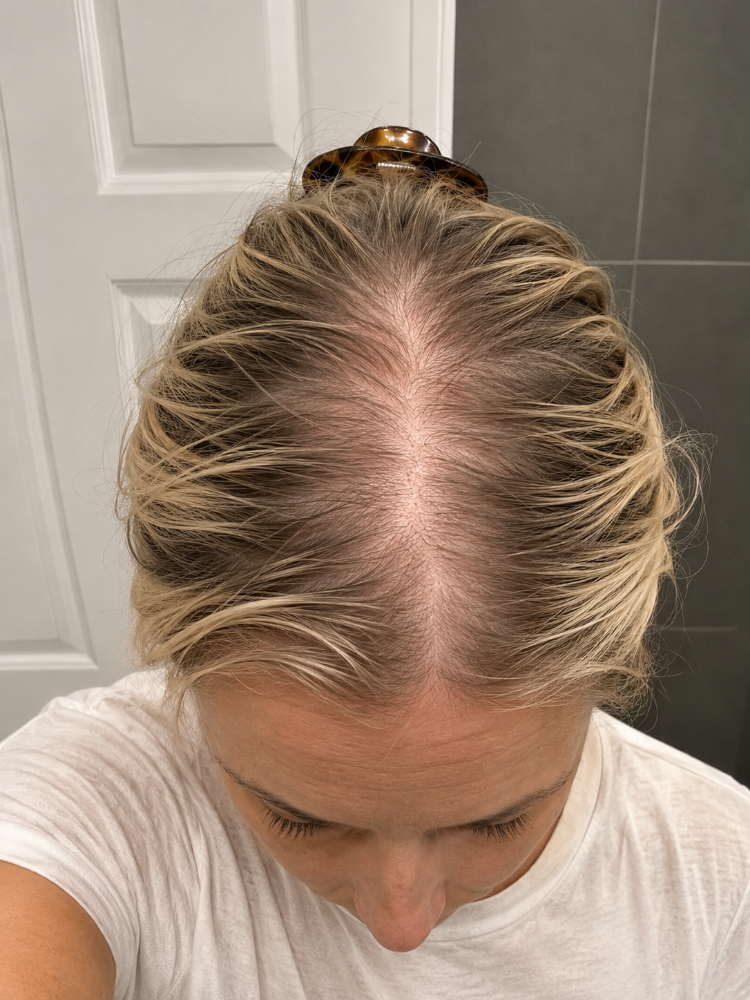
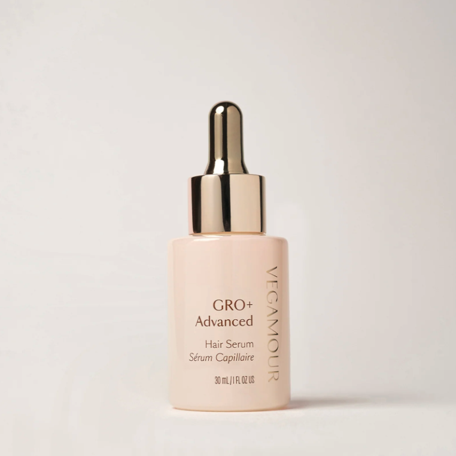
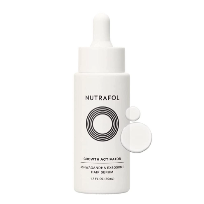
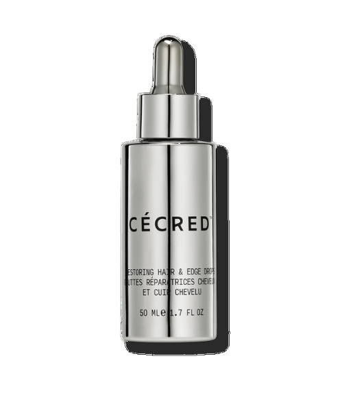
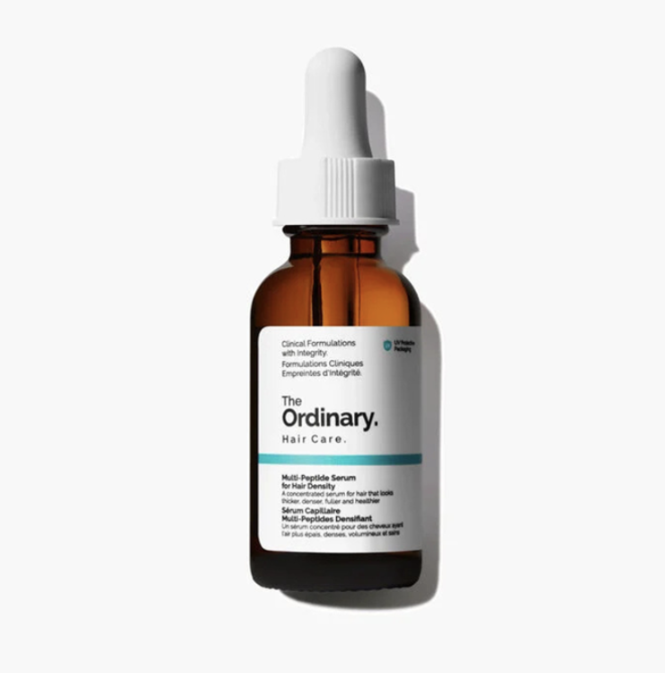
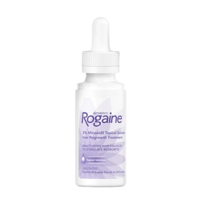
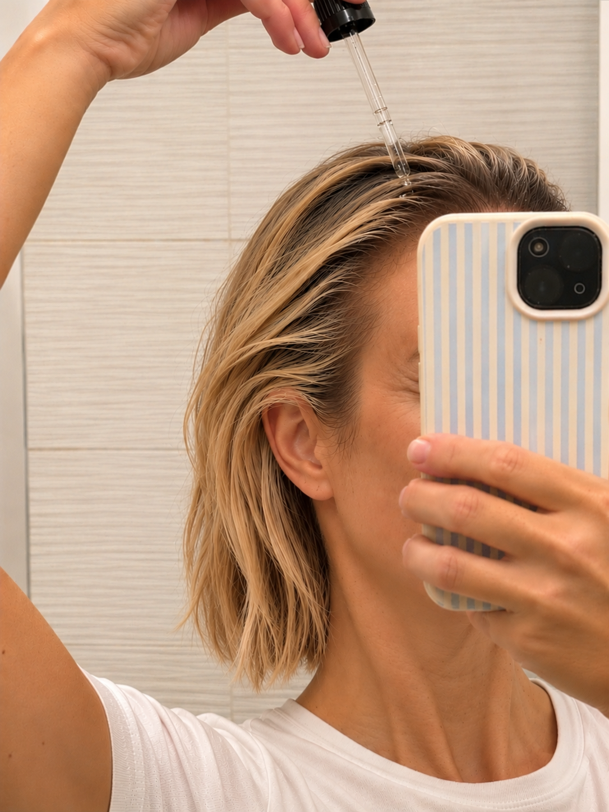
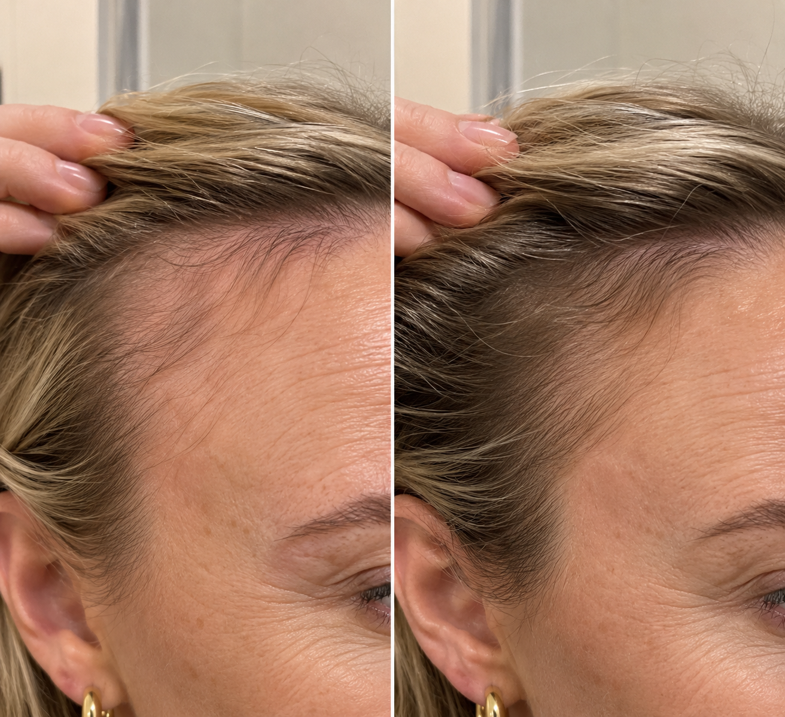

Postpartum shedding is normal, but it doesn’t feel normal. I compared six popular hair serums on one thing most reviews skip: whether you can use them while nursing.

Lineup photo coming
“Nobody warned me that I could lose this much hair after having a baby.”
I was about three months postpartum when the shedding really started.
At first, I thought it was normal. Everyone tells you postpartum hair loss happens, right? But then I started pulling actual clumps of hair out in the shower. Every time I brushed my hair, there was more.
The worst part was my hairline. I had these little bald-looking patches around my temples, and my part was getting wider.


I know it sounds dramatic, but I genuinely didn’t feel like myself anymore. I was already exhausted, barely sleeping, and trying to figure out how to be a mom. And now I didn’t even recognize myself in the mirror.
I tried switching shampoos, taking vitamins, and using different scalp oils. Nothing seemed to make a difference.
At some point I realized most of what I’d tried was working on the hair I already had, not on my scalp, where the new hair actually grows. So I started looking at scalp serums made for thinning and shedding.
That’s when I hit a wall.
Because I was breastfeeding, every serum I looked at came with the same question: is this okay to use while I’m nursing?
That question is what this list is built around. Postpartum shedding has a name, telogen effluvium. During pregnancy, higher estrogen keeps more of your hair in the growth phase. After birth, those hormones drop fast, and a lot of that hair sheds at once, usually peaking around three to four months postpartum.
Most hair-loss reviews never get to the nursing question. I couldn’t skip it. I read the ingredient list of every serum here, checked what each brand actually says about breastfeeding, and brought my top pick to my doctor before I tried anything.
Here are the 6 serums I’d want a friend to know about if she’s going through what I went through, ranked.
How I Ranked These
- Nursing compatibility: What the brand says, plus what’s known about the key ingredients during breastfeeding
- Evidence: Is there a clinical study, and how solid is it?
- Drug- and hormone-free: I prioritized formulas without medication
- Ease of use: Can a sleep-deprived parent realistically use it every day?
- Price per month
Quick Look
 RE:YOU Dual-Path Hair Revival SerumBest Overall (Editor’s Pick)
RE:YOU Dual-Path Hair Revival SerumBest Overall (Editor’s Pick)
Vegamour GRO+ Advanced Hair SerumBest Plant-Based Pick
Nutrafol Hair Serum (Growth Activator)Best to Pair With a Postpartum Supplement
Cécred Restoring Hair & Edge DropsBest for Edges & Hairline
The Ordinary Multi-Peptide Serum for Hair DensityBudget Pick
Women’s Rogaine 2% Minoxidil Topical SolutionBest After You Wean
#1
Editor’s Pick · Best Overall
RE:YOU Dual-Path Hair Revival Serum
Limited time deal: up to 52% off
- Price
- $88 for a 30-day subscription
- Format
- Lightweight scalp serum, dropper
- Key actives
- NOVOGRO™ 273, NOVOGRO™ 624, NOVOGRO™ 623
- Best for
- Drug-free, clinically tested option
Check Price
Cons
- Pricier than drugstore options
- Available online only
The Breastfeeding Question
RE:YOU doesn’t use minoxidil or hormones, which was the first thing I checked. A dermatologist quoted on the brand’s site, Dr. Katie Beleznay, says it was “thoughtfully formulated with pregnancy and breastfeeding in mind.” RE:YOU was formulated without any ingredients known to be unsafe during pregnancy or breastfeeding. Before you start any product on this list, talk to your doctor.
The short answer: This is the one I used, and the one I’d tell a friend to start with. By week 4 there was less hair in the shower. By month 2 I had baby hairs at my temples. By month 6 I had stopped hiding my hairline.
Why I chose it
After months of shampoos, vitamins, and scalp oils that didn’t do anything, I wanted two things: real science, and nothing I’d feel nervous about while breastfeeding.
A lot of brands go after postpartum moms with special “postpartum” versions of their products. RE:YOU takes a different approach. Instead of building a formula around one life stage, it goes straight to the follicle, targeting multiple biological pathways behind hair growth. Postpartum, stress, or age: whatever’s behind the shedding, it’s working where new hair actually starts.
It’s also drug-free and hormone-free. No minoxidil, the ingredient that comes with breastfeeding warnings on the box.
And here’s what sold me: RE:YOU didn’t just test against a placebo. They went head-to-head with minoxidil, the FDA-approved drug most dermatologists reach for first, in a 190-participant randomized, double-blind study. Women using RE:YOU saw 50% more hair growth than the minoxidil group at 90 days. That’s why it’s #1 on this list.
I still brought it to my doctor before starting. After that conversation, I decided to give it a try.
My routine
I added it to my nighttime routine. It only took a minute, which was honestly perfect, because I barely had time for myself. A dropper on my scalp, a quick massage, and done.

What happened
-
Week 4
Less hair in the drain
Around week 4, I looked down after a shower and noticed less hair than usual. I was still shedding, but it was clearly less than before. After months of dreading every wash, it was the first sign of progress.
-
Month 2
Baby hairs at my temples
I’d been taking before-and-after photos, and when I put them side by side, I could see tiny baby hairs at my temples, right where the bald-looking patches had been. I zoomed in to make sure I wasn’t imagining it.

-
Month 4
Healthier in photos
Scrolling through my camera roll around month 4, I noticed my hair looked fuller and healthier. This time, I didn’t want to delete the pictures.
-
Month 6
Feeling like me again
One morning I realized I wasn’t hiding my hairline anymore. I just did my hair, looked in the mirror, and felt like myself again. I felt more confident, as a woman and as a mom.
The honest part
Postpartum hair loss is common, and everyone’s recovery is different. Postpartum shedding often eases on its own over the first year, so I can’t tell you exactly how much of my regrowth was the serum and how much was time. Results vary. What I can tell you is that RE:YOU was part of the turnaround for me, and it’s the one I’d reach for again.
Before using any of these products, talk to your doctor first. I did.
What I Found: For me, RE:YOU became one small part of taking care of myself again. And after spending so much time taking care of everyone else, that meant a lot. It’s drug-free, it was tested against minoxidil, and it comes with a 90-day money-back guarantee. If you’re where I was, this is the one I’d start with.
Try RE:YOU Risk-Free for 90 Days →
#2
Best Plant-Based Pick
Vegamour GRO+ Advanced Hair Serum
- Price
- $78 one-time purchase
- Format
- Dropper serum
- Key actives
- Plant exosomes, Spanish microalgae, botanical peptides
- Best for
- Plant-based routine
Check Price
Pros
- Vegan, fragrance-free formula
- In Vegamour’s 120-day study of 40 participants, 93% had a measured increase in hair density
- Screened as pregnancy- and nursing-safe by an independent pregnancy-beauty ingredient reviewer
- Huge review base at Sephora
Cons
- The clinical study was small (40 people) and brand-run
- $78 for one bottle
- Results take consistent daily use over several months
The Breastfeeding Question
Of all the serums here, this one had the cleanest answer I could find. An independent reviewer who screens beauty products for pregnancy and nursing lists GRO+ Advanced as safe for both. As always, check with your provider, but there was nothing on the label that raised a flag for me.
This was one of the first serums I looked at, because it’s all over the postpartum groups. GRO+ Advanced is Vegamour’s top-tier formula. It’s built on plant-based actives instead of minoxidil, with a lightweight texture you massage into the scalp once a day.
According to Vegamour, a 120-day clinical study reported measurable density gains in most participants, and a consumer study reported less shedding in the shower.
What I Found: A strong, gentle, plant-based option with one of the clearest nursing-friendly profiles on this list. The main downside is price.
#3
Best to Pair With a Supplement
Nutrafol Hair Serum (Growth Activator)
- Price
- $49 one-time purchase
- Format
- Dropper serum
- Key actives
- Ashwagandha exosome technology
- Best for
- Pairing with Nutrafol Postpartum
Check Price
Pros
- From a brand many dermatologists already recommend
- Designed to pair with Nutrafol Postpartum, their supplement made specifically for the first year after birth and breastfeeding
- Lightweight and fast-absorbing
- Listed as nursing-safe by an independent pregnancy-beauty screener
Cons
- Its signature ingredient is derived from ashwagandha, which lacks breastfeeding data as an oral supplement
- Works best as part of a pricier two-product system
- Less clinical data on the serum alone than on the supplements
The Breastfeeding Question
Nutrafol is one of the few hair brands that talks about breastfeeding directly. Its postpartum supplement is OB/GYN-developed and marketed as breastfeeding-friendly. The topical serum is a separate product built on “ashwagandha exosome” technology. An independent screener lists it as nursing-safe, but because ashwagandha doesn’t have much breastfeeding research, I’d still ask your doctor.
I considered this one because Nutrafol makes a postpartum supplement a lot of new moms start with. The serum is the topical add-on: meant for the scalp while Nutrafol Postpartum works from the inside.
On its own, the brand describes it as a lightweight serum. Its real pitch is the two-product system, and that system isn’t cheap.
What I Found: A good pick if you’re committed to the Nutrafol ecosystem. If you only want one product, there are stronger standalone options above it.
#4
Best for Edges & Hairline
Cécred Restoring Hair & Edge Drops
- Price
- $56
- Format
- Dropper serum
- Key actives
- Biomimetic peptides, biotin
- Best for
- Thinning edges and hairline
Check Price
Pros
- Formulated for all hair types and textures
- Peptide-based, no minoxidil
- Easy precision dropper for the hairline, where postpartum shedding often shows first
- Huge social following with lots of user before-and-afters
Cons
- The brand doesn’t give a clear yes or no on breastfeeding
- Contains fragrance
- Sells out often
The Breastfeeding Question
When I looked for Cécred’s official answer, the brand’s help center simply recommends checking with your physician before using its products if you’re pregnant or breastfeeding. There’s nothing alarming in the formula, but there’s no clear “yes” either.
Since my shedding showed up worst at my temples, I looked closely at these drops. That’s the spot they’re made for. The formula leans on peptides, short chains of amino acids meant to support the follicle, instead of medication.
They’re especially popular with women who have textured and curly hair, a group a lot of hair-growth brands overlook.
What I Found: A great choice if your shedding is concentrated around your edges. Just get your doctor’s OK first, since the brand doesn’t weigh in on nursing.
#5
Budget Pick
The Ordinary Multi-Peptide Serum for Hair Density
- Price
- About $24
- Format
- Leave-in serum, dropper
- Key actives
- Redensyl™, Procapil™, Capixyl™, Baicapil™, caffeine
- Best for
- Trying a serum on a budget
Check Price
Pros
- The most affordable serum on this list
- Packed with well-known peptide and botanical complexes
- Vegan, alcohol-free, silicone-free
- Easy to find at Ulta and Sephora
Cons
- Contains 1% caffeine
- The brand recommends consulting a healthcare professional if you’re breastfeeding
- Slightly tacky texture for some users
- Can’t be layered with some acids and vitamin C products
The Breastfeeding Question
The Ordinary doesn’t give a nursing-specific answer; it asks pregnant and breastfeeding customers to check with a healthcare professional. Scalp absorption of the caffeine and peptides is thought to be minimal, but it’s still worth a quick check.
This is the one I’d point a friend to if $70+ a month isn’t realistic right now. It combines several peptide technologies you’ll find in much more expensive serums, plus caffeine, in one lightweight formula.
As a price, it’s the easiest one on this list to try while you check with your doctor.
What I Found: The best value on this list. A sensible first step if budget matters. The brand still wants you to check with a healthcare professional while breastfeeding.
#6
Best After You Wean
Women’s Rogaine 2% Minoxidil Topical Solution for Thin Hair
- Price
- About $29 for a 1-month supply
- Format
- Unscented topical solution
- Key actives
- 2% minoxidil
- Best for
- Post-weaning, if shedding hasn’t resolved
Check Price
Pros
- The most-studied ingredient for hair regrowth
- FDA-approved for women’s hair loss
- Unscented dropper solution, used twice a day
- Widely available and affordable
Cons
- It’s a medication, and guidance on using it while breastfeeding is mixed
- Hair loss can return if you stop using it
- Some people notice extra shedding when they start
- Can cause scalp irritation
The Breastfeeding Question
This is the one where answers vary. Minoxidil can pass into breast milk. The NIH’s LactMed database says topical use likely poses low risk to older, full-term babies but may be best avoided with a newborn or preemie, and many consumer health sources simply say not to use it while breastfeeding. The Rogaine label itself says the product may be harmful if used while breastfeeding, and it tells you not to use it if your hair loss is associated with childbirth. Bottom line: this is a conversation for your doctor, and for many moms it makes more sense after weaning.
This was the box I put back, because of the breastfeeding warning on the label. Minoxidil is the benchmark every serum on this list gets compared to, and for good reason: it has decades of research behind it. Postpartum shedding usually eases on its own, and minoxidil is a medication, not a cosmetic.
That’s why it’s last. If nursing is over and hair still hasn’t recovered after about a year, this is a reasonable next step to discuss with a dermatologist.
What I Found: Effective and proven, but for most breastfeeding moms, it’s a “later” product, not a “right now” product.
When It’s More Than Postpartum Shedding
Postpartum shedding is usually all over and temporary. Check in with your doctor if:
- Your hair hasn’t returned to its usual fullness about a year after giving birth
- You notice distinct bald patches rather than overall thinning
- Shedding comes with fatigue, weight changes, feeling cold, or mood changes. Postpartum thyroid issues are common and can cause hair loss.
- You think you might be low on iron, vitamin D, or other nutrients
FAQ
When does postpartum hair loss start and stop?
It usually starts around 2 to 4 months after giving birth, peaks around months 3 to 4, and starts to improve around 6 months. Most women see meaningful regrowth within a year.
Can I prevent postpartum hair loss?
Not completely. It’s a natural reset of your hair cycle after pregnancy. But a gentle hair routine, good nutrition, and the right products can help support regrowth.
Is minoxidil safe while breastfeeding?
Guidance is mixed. Some sources consider topical minoxidil low-risk for older, full-term babies, while others recommend avoiding it while nursing. Talk to your doctor before using it.
What ingredients should I double-check while breastfeeding?
Talk to your doctor before starting any of these, especially while pregnant or breastfeeding. Minoxidil is the one with a direct warning on the label.
How long until I see results from a hair serum?
Most serums need about 3 months of daily use before you’ll notice a difference, because hair grows slowly. Take a photo of your part or hairline on day one so you have something to compare against.
Does breastfeeding cause hair loss?
Breastfeeding itself isn’t considered the main cause. Postpartum shedding is mainly driven by the drop in pregnancy hormones after birth.
My Final Take
When you’re in the middle of postpartum hair loss, it can feel so isolating. You’re giving everything to your baby, and on top of that, you don’t recognize the person in the mirror.
I’ve been there. I wore my hair up every day and hid behind my baby in photos. I tried shampoos, vitamins, and oils that didn’t help. And because I was breastfeeding, every option felt like a risk.
If that’s you right now, here’s what I want you to know: this phase is common, it’s usually temporary, and you don’t have to choose between taking care of your hair and feeling good about what you’re using while nursing.
If you only try one product, make it RE:YOU. It’s the one I used, it’s drug-free and hormone-free, it was tested head-to-head against minoxidil, and you get 90 days to see results or your money back. Talk to your doctor first, like I did. Then take a photo of your hairline on day one, use it every night, and be patient with yourself.
You deserve to feel like yourself again.
Try RE:YOU Risk-Free for 90 Days →
This article is for informational purposes only and is not a substitute for professional medical advice. Product claims and study results are as reported by each brand. Individual results vary. If you are pregnant or breastfeeding, consult your healthcare provider before using any new hair-growth product.